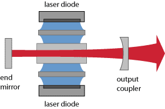
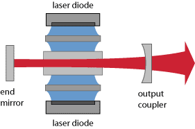

Solid-state Lasers
Acronym: SSL
Definition: lasers based on solid-state gain media (usually ion-doped crystals or glasses)
German: Festkörperlaser
Solid-state lasers are lasers based on solid-state gain media such as crystals or glasses doped with rare earth or transition metal ions, or semiconductor lasers. (Although semiconductor lasers are of course also solid-state devices, they are often not included in the term solid-state lasers.) Ion-doped solid-state lasers (also sometimes called doped insulator lasers) can be made in the form of bulk lasers, fiber lasers, or other types of waveguide lasers. Solid-state lasers may generate output powers between a few milliwatts and (in high-power versions) many kilowatts.
Optical Pumping and Energy Storage
Many solid-state lasers are optically pumped with flash lamps or arc lamps. Such pump sources are relatively cheap and can provide very high powers. However, they lead to a fairly low power efficiency, moderate lifetime, and strong thermal effects such as thermal lensing in the gain medium. For such reasons, laser diodes are very often used for pumping solid-state lasers. Such diode-pumped solid-state lasers (DPSS lasers, also called all-solid-state lasers) have many advantages, in particular a compact setup, long lifetime, and often very good beam quality. Therefore, their share of the market is rapidly rising.
The laser transitions of rare-earth or transition-metal-doped crystals or glasses are normally weakly allowed transitions, i.e., transitions with very low oscillator strength, which leads to long radiative upper-state lifetimes and consequently to good energy storage, with upper-state lifetimes of microseconds to milliseconds. For example, a laser crystal pumped with 10 W of power and having an upper-state lifetime of 1 ms can store an energy of the order of 10 mJ. Although energy storage is beneficial for nanosecond pulse generation (see below), it can also lead to unwanted spiking phenomena in continuous-wave lasers, e.g. when the pump source is switched on.
 

Pulse Generation
The long upper-state lifetimes makes solid-state lasers very suitable for Q switching: the laser crystal can easily store an amount of energy which, when released in the form of a nanosecond pulse, leads to a peak power which is orders of magnitude above the achievable average power. Bulk lasers can thus easily achieve millijoule pulse energies and megawatt peak powers.
In mode-locked operation, solid-state lasers can generate ultrashort pulses with durations measured in picoseconds or femtoseconds (minimum: ≈ 5 fs, achieved with Ti:sapphire lasers). With passive mode locking, they have a tendency for Q-switching instabilities, if these are not suppressed with suitable measures.
Wavelength Tuning
In terms of their potential for wavelength tuning, different types of solid-state lasers differ considerably. Most rare-earth-doped laser crystals, such as Nd:YAG and Nd:YVO4, have a fairly small gain bandwidth of the order of 1 nm or less, so that tuning is possible only within a rather limited range. On the other hand, tuning ranges of tens of nanometers and more are possible with rare-earth-doped glasses, and particularly with transition-metal-doped crystals such as Ti:sapphire, Cr:LiSAF and Cr:ZnSe (→ vibronic lasers).
Types of Solid-state Lasers
Examples of different types of solid-state lasers are:
- Small diode-pumped Nd:YAG (→ YAG lasers) or Nd:YVO4 lasers (→ vanadate lasers) often operate with output powers between a few milliwatts (for miniature setups) and a few watts. Q-switched versions generate pulses with durations of a few nanoseconds, microjoule pulse energies and peak powers of many kilowatts. Intracavity frequency doubling can be used for green output.
- Single-frequency operation, typically achieved with unidirectional ring lasers (e.g. NPROs = nonplanar ring oscillators) or microchip lasers, allows for operation with very small linewidth in the lower kilohertz region.
- Larger lasers in side-pumped or end-pumped configurations (see above), having the geometry of rod lasers, slab lasers or thin-disk lasers, are suitable for output powers up to several kilowatts. Particularly thin-disk lasers can still offer very high beam quality, and also a high power efficiency.
- Q-switched Nd:YAG lasers are still widely used in lamp-pumped versions. Pulsed pumping allows for high pulse energies, whereas the average output powers are often moderate (e.g. a few watts). The cost of such lamp-pumped lasers is lower than for diode-pumped versions with similar output powers.
- Fiber lasers are a special kind of solid-state lasers, with a high potential for high average output power, high power efficiency, high beam quality, and broad wavelength tunability. See also the articles on fiber lasers versus bulk lasers and on high-power fiber lasers and amplifiers.
Suppliers
The RP Photonics Buyer's Guide contains 60 suppliers for solid-state lasers. Among them:
Bibliography
| [1] | T. H. Maiman, “Stimulated optical radiation in ruby”, Nature 187, 493 (1960) (first experimental demonstration of a laser) |
| [2] | R. L. Byer, “Diode laser-pumped solid-state lasers”, Science 239, 742 (1988) |
| [3] | G. Huber, C. Kränkel, and K. Petermann, “Solid-state lasers: status and future”, J. Opt. Soc. Am. B 27 (11), B93 (2010) |
| [4] | D. C. Hanna and W. A. Clarkson, “A review of diode-pumped lasers”, in Advances in Lasers and Applications (eds. D. M. Finlayson and B. Sinclair), pp. 1–18, Taylor & Francis, New York(1999) |
| [5] | W. Koechner, Solid-State Laser Engineering, 6th edn., Springer, Berlin (2006) |
| [6] | A. Sennaroglu (ed.), Solid-State Lasers and Applications, CRC Press, Boca Raton, FL (2007) |
| [7] | R. Paschotta, Field Guide to Lasers, SPIE Press, Bellingham, WA (2007) |
| [8] | R. Paschotta, “Operation regimes of solid-state lasers”, chapter in Handbook of solid-state lasers: Materials, systems and applications, editors: B. Denker, and E. Shklovsky, Woodhead Publishing (2013), ISBN 0 85709 272 3 |
See also: doped insulator lasers, all-solid-state lasers, lasers, gain media, laser crystals, composite laser crystals, rare-earth-doped gain media, transition-metal-doped gain media, YAG lasers, laser crystals versus glasses, fiber lasers versus bulk lasers, diode-pumped lasers, lamp-pumped lasers, end pumping, side pumping, rod lasers, slab lasers, thin-disk lasers, ring lasers, nonplanar ring oscillators, semiconductor lasers, laser specifications
and other articles in the category lasers
If you like this article, share it with your friends and colleagues, e.g. via social media: